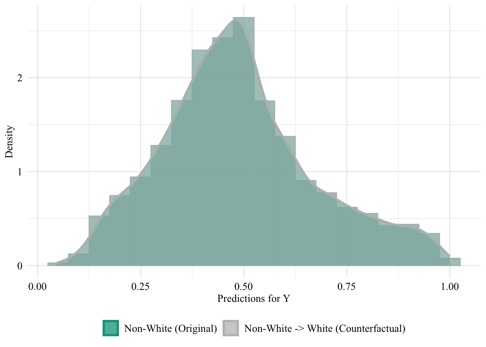
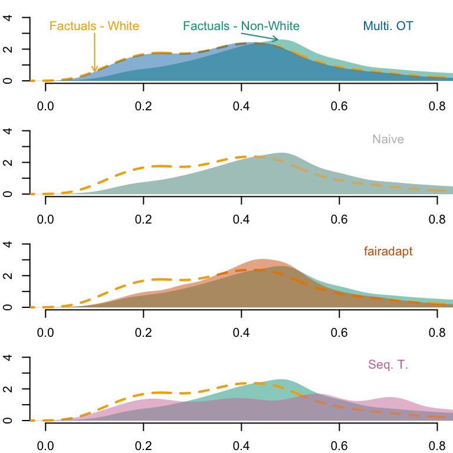

In this chapter, we extend the analysis from the previous part to the COMPAS dataset (Larson, Kirchner, and Angwin (2016)). We use a cleaned version of this dataset available in the {fairadapt} R package.
# if the package is installed, it is possible to use# library(seqtransfairness)
The COMPAS (Correctional Offender Management Profiling for Alternative Sanctions) dataset contains information used to predict whether criminal defendants are likely of recidivism (Y). The data contains real observations from Broward County, Florida. Each row gives information on individuals released on parole and whether they reoffended within two years (Y). Other characteristics such as the sex of the individual, the number of juvenile felonies, the number of juvenile misdemeanors, the number of other juvenile offenses, the number of prior offenses and the degree of charge (with two values F for felony, and M for misdemeanor). We will use the race of individuals as the sensitive attribute (S).
vars <-c("age", "sex", "juv_fel_count","juv_misd_count", "juv_other_count", "priors_count","c_charge_degree", "race", "two_year_recid")s <-"race"y <-"two_year_recid"
The data can be loaded as follows:
library(fairadapt)# reading in the COMPAS datadata("compas", package ="fairadapt")compas <- compas |>as_tibble() |>select(!!vars) |>mutate(race =fct_relevel(race, "Non-White", "White"))
We can have a quick glance at the proportion of Non-White individuals and White individuals among people who reoffended or not.
compas |>count(two_year_recid, race) |>group_by(two_year_recid) |>mutate(pct_race =round(100* n /sum(n), 2))
# A tibble: 4 × 4
# Groups: two_year_recid [2]
two_year_recid race n pct_race
<int> <fct> <int> <dbl>
1 0 Non-White 2475 62.4
2 0 White 1488 37.6
3 1 Non-White 2285 70.3
4 1 White 966 29.7
We will assume the same causal graph as in Plečko and Meinshausen (2020) (Figure 4, p. 27) and use their codes from their Github to create the adjacency matrix.
We load functions defined in our small package (notably, split_dataset()):
library(devtools)load_all("../seqtransfairness/")
ℹ Loading seqtransfairness
We fit a logistic regression model on the data to predict the outcome binary variable. First, we split the dataset into two sets: train (70%) and test (30%).
unaware logistic regression classifier: model without including the sensitive attribute.
aware logistic regression classifier: model with the sensitive attribute included in the set of features.
To do so, we use the training function, log_reg_train(), defined in our small package. When the two models are trained, we extract the predicted values on both the train set and the test set.
# Unaware logistic regression classifier (model without S)pred_unaware <-log_reg_train( data_train, data_test, s = s, y = y, type ="unaware")pred_unaware_train <- pred_unaware$pred_trainpred_unaware_test <- pred_unaware$pred_test# Aware logistic regression classifier (model with S)pred_aware <-log_reg_train( data_train, data_test, s = s, y = y, type ="aware")pred_aware_train <- pred_aware$pred_trainpred_aware_test <- pred_aware$pred_test
We create a table for each model, with the sensitive attribute and the predicted value by the model (\(\hat{y}\)), only for observations from the test set.
Let us change the sensitive attribute of individuals from the source group (Non-White) to the target group (White). Then, we use both models (unaware and aware) to predict the target binary variable.
Let us have a look at the distribution of the predicted scores of the classifier in both groups, when the predictions are made after setting the race attribute of all Non-White to White. Since the model does not use the sensitive attribute, changing it will result in absolutely no change in its predictions in this case.
The predicted values using the initial characteristics (the factuals), for the unaware model are stored in the object pred_unaware_all. We put in a table the initial characteristics (factuals) and the prediction made by the unaware model:
Figure 14.3: Unaware model, Sensitive: Race, Non-White -> White
Then, we focus on the distribution of predicted scores for ccounterfactual of Non-White individuals and factuals of White individuals Again, since the model is blind to the sensitive attribute, the distributions are perfectly aligned.
Figure 14.4: Distribution of Predicted Scores for Minority Class (Non-White), Unaware model, Sensitive: Race, Non-White -> White

14.2.2 Aware Model
We turn to the aware model. This time, the sensitive attribute is used by the classifier when it is trained. Hence, changing the sensitive attribute of individuals in the source group to that of the target group may change the predicted values for the binary outcome variable.
The predicted values by the model, on the initial characteristics (on the factuals) are stored in the pred_aware_all object.
We create a tibble with the factuals and the predictions by the aware model:
Figure 14.6: Distribution of Predicted Scores for Minority Class (Non-White), Aware model, Sensitive: Race, Non-White -> White
14.3 Fairadapt
We have already assumed a causal graph (see Figure 14.2).
Let us consider that we want to build counterfactuals for Non-White individuals: what if the individual had been White and not Non-White?
Let us have a look at the levels of our sensitive variable:
levels(compas |>pull(!!s))
[1] "Non-White" "White"
Two configurations will be considered in turn:
The reference class consists of White individuals, and fairadapt will be used to obtain the counterfactual values for Non-White individuals as if they had been White individuals.
The reference class consists of Non-White individuals, and fairadapt will be used to obtain the counterfactual values for White individuals as if they had been Non-White individuals.
Figure 14.10: Distribution of Predicted Scores for Minority Class (White), Unaware model, Sensitive: Race, White -> Non-White
14.3.2 Aware Model
Now, we turn to the model that includes the sensitive attribute, i.e., the aware model. Let us get the predicted values for the counterfactuals, using the aware model:
Figure 14.14: Distribution of Predicted Scores for Minority Class (White), Aware model, Sensitive: Race, Reference: Non-White individuals
14.4 Sequential Transport
We now turn to sequential transport (the methodology developed in our paper). We use the seq_trans() function defined in our small package to perform a fast sequential transport on causal graph.
Transporting age
Transporting sex
Transporting juv_misd_count
Transporting juv_other_count
Transporting juv_fel_count
Transporting priors_count
Transporting c_charge_degree
# weights: 8 (7 variable)
initial value 1700.983181
iter 10 value 1591.143276
final value 1591.092129
converged
We build a dataset with the sensitive attribute of Non-White individuals changed to White individuals, and their characteristics changed to their transported characteristics:
We make predictions based on those counterfactuals obtained with sequential transport, on both models (the unaware model, and the aware model):
pred_seq_unaware <-predict( model_unaware, newdata = df_counterfactuals_seq_nonwhite, type ="response")pred_seq_aware <-predict( model_aware, newdata = df_counterfactuals_seq_nonwhite, type ="response")
counterfactuals_unaware_seq_nonwhite <- df_counterfactuals_seq_nonwhite |>mutate(pred = pred_seq_unaware, type ="counterfactual")counterfactuals_aware_seq_nonwhite <- df_counterfactuals_seq_nonwhite |>mutate(pred = pred_seq_aware, type ="counterfactual")
Let us put in a single table the predictions made by the classifier (either aware or unaware) on Non-White individuals based on their factual characteristics, and those made based on the counterfactuals:
# Factualstb_unaware_factuals <- tb_unaware |>filter(counterfactual =="none")# Predicted valuespred_unaware_factuals_nonwhite <- tb_unaware_factuals |>filter(race =="Non-White") |>pull("pred")pred_unaware_factuals_white <- tb_unaware_factuals |>filter(race =="White") |>pull("pred")# Estimated densitiesd_unaware_factuals_nonwhite <-density(pred_unaware_factuals_nonwhite)d_unaware_factuals_white <-density(pred_unaware_factuals_white)par(mfrow =c(3, 1), mar =c(2, 2, 0, 0))x_lim <-c(0, .8)y_lim <-c(0, 10)# Naivetb_unaware_naive <- tb_unaware |>filter(counterfactual =="naive")# Predicted values, focusing on Non-White --> Whitepred_unaware_naive_nonwhite_star <- tb_unaware_naive |>filter(race =="White") |>pull("pred")# Estimated densitiesd_unaware_naive_nonwhite_star <-density(pred_unaware_naive_nonwhite_star)plot( d_unaware_factuals_nonwhite,main ="", xlab ="", ylab ="",axes =FALSE, col =NA,xlim = x_lim, ylim = y_lim)axis(1)axis(2)polygon(d_unaware_factuals_nonwhite, col =alpha(colours_all[["source"]], .5), border =NA)lines(d_unaware_factuals_white, col = colours_all[["reference"]], lty =2, lwd =2)polygon(d_unaware_naive_nonwhite_star, col =alpha(colours_all[["naive"]], .5), border =NA)pos_arrow_ref <- .6text(x = pos_arrow_ref, y =8, "Factuals - White", col = colours_all[["reference"]])ind_min_ref <-which.min(abs(d_unaware_factuals_white$x - pos_arrow_ref))arrows(x1 = d_unaware_factuals_white$x[ind_min_ref],y1 = d_unaware_factuals_white$y[ind_min_ref],x0 = pos_arrow_ref, y0 =7,length =0.05, col = colours_all[["reference"]])text(x = .09, y =8, "Naive", col = colours_all[["naive"]])# Fairadapttb_unaware_fpt <- tb_unaware |>filter(counterfactual =="fpt")# Predicted values, focusing on Non-White --> Whitepred_unaware_fpt_nonwhite_star <- tb_unaware_fpt |>filter(race =="White") |>pull("pred")# Estimated densitiesd_unaware_fpt_nonwhite_star <-density(pred_unaware_fpt_nonwhite_star)plot( d_unaware_factuals_nonwhite,main ="", xlab ="", ylab ="",axes =FALSE, col =NA,xlim = x_lim, ylim = y_lim)axis(1)axis(2)polygon(d_unaware_factuals_nonwhite, col =alpha(colours_all[["source"]], .5), border =NA)lines(d_unaware_factuals_white, col = colours_all[["reference"]], lty =2, lwd =2)polygon(d_unaware_fpt_nonwhite_star, col =alpha(colours_all[["fairadapt"]], .5), border =NA)text(x = .15, y =6, "Factuals - Non-White", col = colours_all[["source"]])pos_arrow <- .07ind_min <-which.min(abs(d_unaware_factuals_nonwhite$x - pos_arrow))arrows(x1 = d_unaware_factuals_nonwhite$x[ind_min],y1 = d_unaware_factuals_nonwhite$y[ind_min],x0 = .15, y0 =5,length =0.05, col = colours_all[["source"]])text(x = .4, y =6, "fairadapt", col = colours_all[["fairadapt"]])# Sequential transporttb_unaware_seq <- tb_unaware |>filter(counterfactual =="seq")# Predicted values, focusing on Non-White --> Whitepred_unaware_seq_nonwhite_star <- tb_unaware_seq |>filter(race =="White") |>pull("pred")# Estimated densitiesd_unaware_seq_nonwhite_star <-density(pred_unaware_seq_nonwhite_star)plot( d_unaware_factuals_nonwhite,main ="", xlab ="", ylab ="",axes =FALSE, col =NA,xlim = x_lim, ylim = y_lim)axis(1)axis(2)polygon(d_unaware_factuals_nonwhite, col =alpha(colours_all[["source"]], .5), border =NA)lines(d_unaware_factuals_white, col = colours_all[["reference"]], lty =2, lwd =2)polygon(d_unaware_seq_nonwhite_star, col =alpha(colours_all[["seq"]], .5), border =NA)text(x = .4, y =6, "Seq. T.", col = colours_all[["seq"]])
Figure 14.19: Densities of predicted scores for Non-White individuals with factuals and White individuals counterfactuals. The yellow dashed line corresponds to the density of predicted scores for Non-White individuals, using factuals.

Codes used to create the Figure.
# Factualstb_aware_factuals <- tb_aware |>filter(counterfactual =="none")# Predicted valuespred_aware_factuals_nonwhite <- tb_aware_factuals |>filter(race =="Non-White") |>pull("pred")pred_aware_factuals_white <- tb_aware_factuals |>filter(race =="White") |>pull("pred")# Estimated densitiesd_aware_factuals_nonwhite <-density(pred_aware_factuals_nonwhite)d_aware_factuals_white <-density(pred_aware_factuals_white)par(mfrow =c(3, 1), mar =c(2, 2, 0, 0))x_lim <-c(0, .8)y_lim <-c(0, 16)# Naivetb_aware_naive <- tb_aware |>filter(counterfactual =="naive")# Predicted values, focusing on Non-White --> Whitepred_aware_naive_nonwhite_star <- tb_aware_naive |>filter(race =="White") |>pull("pred")# Estimated densitiesd_aware_naive_nonwhite_star <-density(pred_aware_naive_nonwhite_star)plot( d_aware_factuals_nonwhite,main ="", xlab ="", ylab ="",axes =FALSE, col =NA,xlim = x_lim, ylim = y_lim)axis(1)axis(2)polygon(d_aware_factuals_nonwhite, col =alpha(colours_all[["source"]], .5), border =NA)lines(d_aware_factuals_white, col = colours_all[["reference"]], lty =2, lwd =2)polygon(d_aware_naive_nonwhite_star, col =alpha(colours_all[["naive"]], .5), border =NA)text(x = .15, y =13, "Factuals - Non-White", col = colours_all[["source"]])pos_arrow <- .03ind_min <-which.min(abs(d_aware_factuals_nonwhite$x - pos_arrow))arrows(x1 = d_aware_factuals_nonwhite$x[ind_min],y1 = d_aware_factuals_nonwhite$y[ind_min],x0 = .15, y0 =11,length =0.05, col = colours_all[["source"]])pos_arrow_ref <- .6text(x = pos_arrow_ref, y =13, "Factuals - White", col = colours_all[["reference"]])ind_min_ref <-which.min(abs(d_aware_factuals_white$x - pos_arrow_ref))arrows(x1 = d_aware_factuals_white$x[ind_min_ref],y1 = d_aware_factuals_white$y[ind_min_ref],x0 = pos_arrow_ref, y0 =11,length =0.05, col = colours_all[["reference"]])text(x = .4, y =6, "Naive", col = colours_all[["naive"]])# Fairadapttb_aware_fpt <- tb_aware |>filter(counterfactual =="fpt")# Predicted values, focusing on Non-White --> Whitepred_aware_fpt_nonwhite_star <- tb_aware_fpt |>filter(race =="White") |>pull("pred")# Estimated densitiesd_aware_fpt_nonwhite_star <-density(pred_aware_fpt_nonwhite_star)plot( d_aware_factuals_nonwhite,main ="", xlab ="", ylab ="",axes =FALSE, col =NA,xlim = x_lim, ylim = y_lim)axis(1)axis(2)polygon(d_aware_factuals_nonwhite, col =alpha(colours_all[["source"]], .5), border =NA)lines(d_aware_factuals_white, col = colours_all[["reference"]], lty =2, lwd =2)polygon(d_aware_fpt_nonwhite_star, col =alpha(colours_all[["fairadapt"]], .5), border =NA)text(x = .4, y =6, "fairadapt", col = colours_all[["fairadapt"]])# Sequential transporttb_aware_seq <- tb_aware |>filter(counterfactual =="seq")# Predicted values, focusing on Non-White --> Whitepred_aware_seq_nonwhite_star <- tb_aware_seq |>filter(race =="White") |>pull("pred")# Estimated densitiesd_aware_seq_nonwhite_star <-density(pred_aware_seq_nonwhite_star)plot( d_aware_factuals_nonwhite,main ="", xlab ="", ylab ="",axes =FALSE, col =NA,xlim = x_lim, ylim = y_lim)axis(1)axis(2)polygon(d_aware_factuals_nonwhite, col =alpha(colours_all[["source"]], .5), border =NA)lines(d_aware_factuals_white, col = colours_all[["reference"]], lty =2, lwd =2)polygon(d_aware_seq_nonwhite_star, col =alpha(colours_all[["seq"]], .5), border =NA)text(x = .4, y =6, "Seq. T.", col = colours_all[["seq"]])
Figure 14.20: Densities of predicted scores for Non-White individuals with factuals and with counterfactuals. The yellow dashed line corresponds to the density of predicted scores for Non-White individuals, using factuals.
14.6 Metrics
Warning
This section is still under construction. Results may not correct. The metrics used should be changed soon.
Let us compute a few metrics metrics, such as the accuracy, the log-loss, and the Brier Score, as well as the counterfactual demographic parity. For the accuracy, we define the set the probability threshold to .5.
The counterfactual demographic parity writes:
\[
\mathrm{CDP}=\frac{1}{n_0}\sum_{i\in\mathcal{D}_0}m(1,\boldsymbol{x}_{i}^\star) - m(0,\boldsymbol{x}_{i}),
\] where \(n_0\) is the number of Non-White individuals in the sample, \(m()\) is the classifier, with \(m(1,\boldsymbol{x}_{i}^\star)\) the score returned when the sensitive attribute is \(S=1\), i.e., “White” and \(\boldsymbol{x}_{i}^\star\) are the counterfactual values, \(m(0,\boldsymbol{x}_{i})\) is the score returned by the model when using the factuals.
We compute the Equalized Odds criterion as the absolute difference between true positive rate (TPR) across the two groups (Non-White/White):
\[
EO = | TPR_{\text{Non-White}} - TPR_{\text{White}} |
\]
A binary predictor \(\hat{Y}\) satisfies equal opportunity with respect to \(S\) and \(Y\) if Hardt, Price, and Srebro (2016): \[
P\big(\hat{Y} = 1 | S=0, Y=1 \big) = P\big(\hat{Y} = 1 | S=1, Y=1 \big)
\]
prob_threshold <- .5#' Log loss#' #' @param y vector or binary obsevations#' @param s vector of predicted scorescalculate_log_loss <-function(y, s){ s_pred <-pmin(pmax(s, 1e-15), 1-1e-15)mean(-y*log(s_pred) - (1-y)*log(1-s_pred))}#' Brier Score#'#' The Brier Score \citep{brier_1950}, is expressed as: \deqn{\text{BS} =#' \frac{1}{n}\sum_{i=1}^{n} \big(\hat{s}(\mathbf{x}_i) - d_i\big)^{2}} where#' \eqn{d_i \in \{0,1\}} is the observed event for observation \eqn{i}.#'#' @param obs vector of observed binary events#' @param scores vector of scores#'#' @references Brier, G. W. (1950). Verification of forecasts expressed in terms#' of probability. Monthly Weather Review 78: 1–3.#'#' @exportbrier_score <-function(obs, scores) mean((scores - obs)^2)
We will then put in a table all the predictions made in each case: without using counterfactuals, and with using each counterfactual technique applied on Non-White individuals’ characteristics. Since we do not get counterfactual values for White individuals, their predictions remain unchanged in each case. We will therefore complete the dataset with their unchanged predictions.
Table 14.1: Metrics computed on scores predicted by the classifier based on the factuals or the different versions of the counterfactuals, for the aware model (sensitive variable used to train the classifier) and the unaware model (sentitive variable not provided to train the classifier).
Hardt, Moritz, Eric Price, and Nati Srebro. 2016. “Equality of Opportunity in Supervised Learning.”Advances in Neural Information Processing Systems 29: 3315–23.